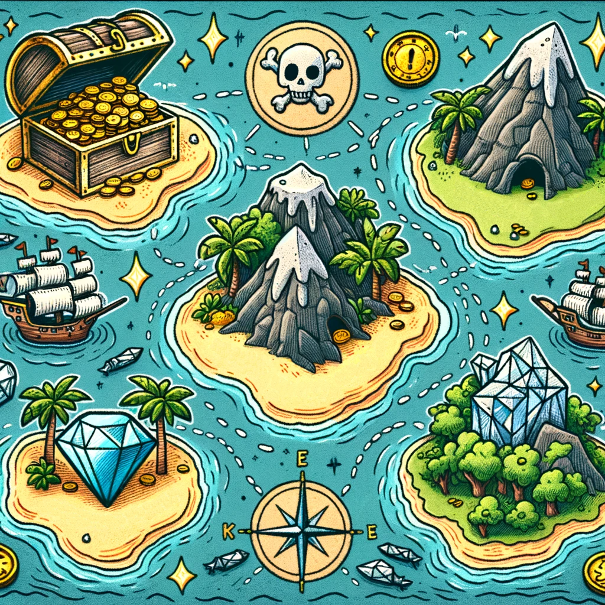

Capítulo 10: Más Aventuras Piratas#
Introducción: Navegando hacia Nuevos Horizontes
A medida que nos sumergimos en el capítulo final de nuestra aventura pirata en "La Isla del Tesoro", estamos a punto de explorar territorios desconocidos y emocionantes en el mundo de la programación en Python. En este capítulo, expandiremos nuestro conocimiento al abordar conceptos avanzados, como el uso de módulos y bibliotecas externas, que nos permitirán dar vida a nuevas y emocionantes aventuras piratas.
Hasta ahora, hemos recorrido un largo camino, aprendiendo los fundamentos de Python, explorando listas y diccionarios, y construyendo un registro detallado de tesoros. Ahora, con estos cimientos sólidos, nos aventuraremos aún más lejos en el mundo de la programación, abriendo la puerta a la creatividad y la innovación.
Módulos y Bibliotecas Externas
En esta etapa, aprenderemos cómo utilizar módulos y bibliotecas externas en Python. Los módulos son archivos que contienen código Python que podemos importar y reutilizar en nuestros programas, mientras que las bibliotecas externas son conjuntos de módulos que ofrecen funciones y herramientas adicionales para tareas específicas.
Exploraremos cómo importar módulos en nuestros proyectos y cómo utilizar bibliotecas externas para ampliar las capacidades de Python en áreas como gráficos, juegos y más. Estos recursos adicionales nos permitirán crear proyectos más ambiciosos y emocionantes relacionados con la temática pirata.
Desarrollo de Mini-Juegos y Proyectos
Como parte de nuestra aventura final, nos sumergiremos en el desarrollo de mini-juegos y proyectos relacionados con piratas. Utilizaremos los conocimientos adquiridos a lo largo de este libro para construir aplicaciones piratas interactivas, desde juegos de batalla naval hasta simuladores de búsqueda de tesoros.
Estos mini-juegos y proyectos no solo consolidarán lo que hemos aprendido, sino que también serán una oportunidad para dar rienda suelta a nuestra creatividad y disfrutar de la programación de una manera divertida y emocionante.
¡Prepárense para zarpar hacia nuevas aventuras piratas en el mundo de la programación en Python! En este capítulo, exploraremos territorios inexplorados y demostraremos que los piratas informáticos pueden ser los más ingeniosos y creativos en el mundo de la programación.
Módulos y Bibliotecas Externas#
En este subcapítulo, exploraremos cómo utilizar módulos y bibliotecas externas para expandir las capacidades de Python y crear aventuras piratas más emocionantes. Los módulos son archivos que contienen funciones y variables reutilizables, mientras que las bibliotecas externas son conjuntos de módulos que ofrecen funcionalidades adicionales. A continuación, veremos ejemplos prácticos relacionados con la temática del libro:
1. Módulo para Generar Nombres Piratas:
Supongamos que deseamos generar nombres de piratas de manera aleatoria en nuestro juego. Podemos utilizar el módulo random de Python para esto. Aquí hay un ejemplo:
import random
# Listas de posibles nombres piratas
nombres = ["Barbanegra",
"Calamar Joe",
"Anne Bonny",
"Ojo de Halcón",
"Diente de Sable"]
apellidos = ["el Rojo",
"el Marino",
"de la Muerte",
"el Astuto"]
# Generar un nombre pirata aleatorio
nombre_pirata = random.choice(nombres) + " " + random.choice(apellidos)
print("Bienvenido a bordo, Capitán " + nombre_pirata)
Este código importa el módulo random para generar nombres piratas aleatorios combinando un nombre de la lista nombres con un apellido de la lista apellidos.
Una posible salida de este código podría ser:
Bienvenido a bordo, Capitán Barbanegra el Astuto
2. Módulo para Cálculos Náuticos:
Supongamos que queremos calcular la distancia entre dos puntos en el océano para nuestra aventura. Podemos utilizar la biblioteca externa geopy para esto. Asegúrate de instalar la biblioteca primero utilizando pip install geopy. Luego, aquí hay un ejemplo:
from geopy.distance import great_circle
# Coordenadas de dos puntos en el océano (latitud, longitud)
coordenadas_punto1 = (32.7157, -117.1611)
coordenadas_punto2 = (37.7749, -122.4194)
# Calcular la distancia en millas náuticas
distancia = great_circle(coordenadas_punto1, coordenadas_punto2).nautical
print("La distancia entre los puntos es de", distancia, "millas náuticas.")
En este ejemplo, importamos la función great_circle de la biblioteca geopy para calcular la distancia entre dos puntos en millas náuticas utilizando sus coordenadas de latitud y longitud.
Estos ejemplos ilustran cómo los módulos y bibliotecas externas pueden mejorar nuestra aventura pirata en Python, permitiéndonos agregar características y funcionalidades específicas de manera eficiente. ¡Prepárate para aprovechar estos recursos en sus próximas hazañas!
Desarrollo de Mini-Juegos#
En esta sección, vamos a explorar el emocionante mundo de la creación de mini-juegos y proyectos adicionales relacionados con piratas utilizando Python. Estos proyectos te brindarán la oportunidad de aplicar tus habilidades de programación y llevar tus aventuras piratas a un nivel completamente nuevo. Comenzaremos con un mini-juego sencillo pero funcional que te permitirá desafiar a tus amigos en una batalla naval pirata.
Mini-Juego: Batalla Naval Pirata#
Descripción: En este mini-juego, crearás una versión simplificada del clásico juego de Batalla Naval. Tendrás un mapa del océano en el que tú y tu oponente, otro capitán pirata, colocarán barcos. Luego, se turnarán para disparar cañonazos y tratar de hundir los barcos del oponente.
Requisitos: - Tablero de juego (matriz) - Barcos para ti y tu oponente - Funciones para colocar barcos y disparar cañonazos - Lógica para determinar el ganador
Ejemplo de Código:
import random
# Crear un tablero de juego (matriz)
tablero = [["~" for _ in range(10)] for _ in range(10)]
# Función para mostrar el tablero
def mostrar_tablero(tablero):
for fila in tablero:
print(" ".join(fila))
# Función para colocar barcos en el tablero
def colocar_barco(tablero, fila, columna):
if 0 <= fila < 10 and 0 <= columna < 10:
if tablero[fila][columna] == "~":
tablero[fila][columna] = "B"
return True
return False
# Función para disparar cañonazo
def disparar(tablero, fila, columna):
if 0 <= fila < 10 and 0 <= columna < 10:
if tablero[fila][columna] == "B":
tablero[fila][columna] = "X"
return True
return False
# Colocar barcos para el jugador y el oponente
for _ in range(5):
fila = random.randint(0, 9)
columna = random.randint(0, 9)
colocar_barco(tablero, fila, columna)
# Juego
for turno in range(10):
print(f"Turno {turno + 1}")
mostrar_tablero(tablero)
fila = int(input("Fila para disparar: "))
columna = int(input("Columna para disparar: "))
if disparar(tablero, fila, columna):
print("Le diste a un barco enemigo")
else:
print("Agua, no diste a ningún barco enemigo.")
if all("B" not in fila for fila in tablero):
print("Has hundido todos los barcos enemigos. Victoria")
break
print("Fin del juego.")
Este mini-juego te permitirá experimentar con la programación y crear una experiencia pirata interactiva. Puedes personalizarlo y agregar más características para hacerlo aún más emocionante. ¡Que empiece la batalla naval pirata!
Fondeadero#
Un nuevo reto. Hemos probado a generar nombres de piratas, ahora lo vamos a hacer con los nombres de barcos piratas. ¿Se te ocurren más nombres?
import random
# Listas de posibles nombres de barcos piratas
nombres_barcos = ["El Vengador",
"El Furioso",
"El Tiburón",
"El Galeón",
"El Temporal"]
adjetivos = ["Sangriento",
"Temible",
"Malicioso",
"Intrépido",
"Legendario"]
# Generar un nombre de barco pirata aleatorio
nombre_barco = random.choice(nombres_barcos) + " " + random.choice(adjetivos)
print("Tu barco pirata se llama:", nombre_barco)
::: tip ¿Sabías que el nombre del barco de la historia de La Isla del Tesoro es la Hispaniola y que la posada del joven Jim Hawkins se llama Almirante Benbow? :::
¿Te animas ha generar un nuevo código para nombrar islas que pudieran tener tesoros escondidos? te ayudo con algunas ideas:
# Listas de posibles nombres de islas
nombres_islas = ["Isla de los Tesoros",
"Isla de los Secretos",
"Isla de los Piratas",
"Isla de los Diamantes",
"Isla de los Bosques"]
sustantivos = ["Perdidos",
"Escondidos",
"Misteriosos",
"Encantados",
"Desconocidos"]
